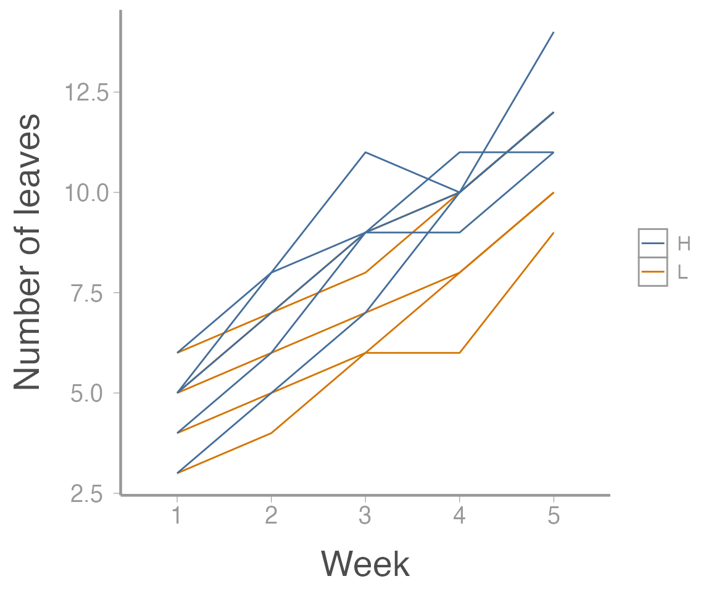
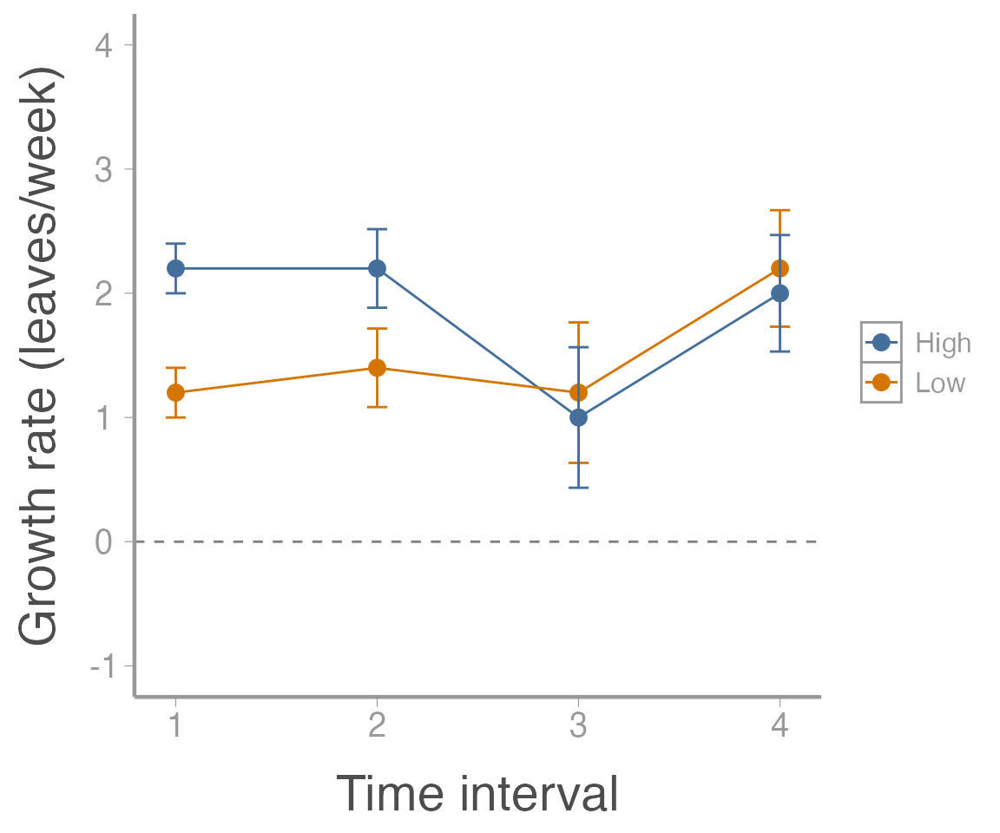

lab10_repeated_measures.RmdExperiments that use “repeated measures” methods are those that have the following design:
We randomly assign each ‘subject’ to a treatment
We record the response to the treatment over time
In these cases, we need to think about the following sources of variation:
Treatment
Time
Treatment-time interaction
Random variation among subjects
Random variation within subjects
As we saw in lecture, there are several ways to analyze repeated measures data, including:
This is similar to a split-plot (or nested and crossed) analysis, but with adjusted p-values
Adjustments assuming “near-sphericity”: Greenhouse-Geisser or Huynh-Feldt methods
In R, you must do a MANOVA to obtain these adjusted p-values
Testing based on Wilks’ lambda or Pillai’s trace
No assumptions about “sphericity” are required
This is usually followed by a profile analysis
This can be done using lme()
We might cover this later
Let’s see how to implement these approaches in R
First, the data:
library(FANR6750)
data("plantData")
plantData$plant <- factor(plantData$plant)
plantData$fertilizer <- factor(plantData$fertilizer)
plantData$week <- factor(plantData$week)
str(plantData)
#> 'data.frame': 50 obs. of 4 variables:
#> $ plant : Factor w/ 10 levels "1","2","3","4",..: 1 1 1 1 1 2 2 2 2 2 ...
#> $ fertilizer: Factor w/ 2 levels "H","L": 2 2 2 2 2 2 2 2 2 2 ...
#> $ week : Factor w/ 5 levels "1","2","3","4",..: 1 2 3 4 5 1 2 3 4 5 ...
#> $ leaves : int 4 5 6 8 10 3 4 6 6 9 ...
head(plantData, n = 8)
#> plant fertilizer week leaves
#> 1 1 L 1 4
#> 2 1 L 2 5
#> 3 1 L 3 6
#> 4 1 L 4 8
#> 5 1 L 5 10
#> 6 2 L 1 3
#> 7 2 L 2 4
#> 8 2 L 3 6As we can see, these data contain information on leaf growth by 10 plants subjected to different fertilizer treatments. Leaf growth on each plant was measured weekly for 5 weeks, leading to the repeated measures structure.
As always, it helps to visualize the data:
library(ggplot2)
ggplot(plantData, aes(x = week, y = leaves,
group = plant,
color = fertilizer)) +
geom_path() +
scale_x_discrete("Week") +
scale_y_continuous("Number of leaves")
Now let’s fit the univariate model:
aov1 <- aov(leaves ~ fertilizer * week + Error(plant),
data = plantData)
summary(aov1)
#>
#> Error: plant
#> Df Sum Sq Mean Sq F value Pr(>F)
#> fertilizer 1 16.8 16.82 2.6 0.15
#> Residuals 8 51.7 6.46
#>
#> Error: Within
#> Df Sum Sq Mean Sq F value Pr(>F)
#> week 4 267.4 66.9 158.22 <2e-16 ***
#> fertilizer:week 4 5.1 1.3 3.01 0.033 *
#> Residuals 32 13.5 0.4
#> ---
#> Signif. codes: 0 '***' 0.001 '**' 0.01 '*' 0.05 '.' 0.1 ' ' 1Although this output looks ok, remember that we need to adjust the p-values for the time and interaction effects. In R, this requires reformatting the data and running a MANOVA
Specifically, we need to covert the data from the “long” format that it is currently in (each measurement on each plant is contained in its own row) to the “wide” format (each plant is one row, with separate columns for each weekly measurement). There are a number of ways to convert between long and wide formats in R (all of which are, in my opinion, confusing and require looking up syntax/examples every time) but we’ll use the pivot_wider() function from the tidyr package1:
plantData_wide <- tidyr::pivot_wider(data = plantData,
names_from = week,
names_prefix = "week",
values_from = leaves)
head(plantData_wide)
#> # A tibble: 6 × 7
#> plant fertilizer week1 week2 week3 week4 week5
#> <fct> <fct> <int> <int> <int> <int> <int>
#> 1 1 L 4 5 6 8 10
#> 2 2 L 3 4 6 6 9
#> 3 3 L 6 7 9 10 12
#> 4 4 L 5 7 8 10 12
#> 5 5 L 5 6 7 8 10
#> 6 6 H 4 6 9 9 11Now we can run the MANOVA:
And the results will contain the adjusted p-values:
anova(manova1, X = ~1, test = "Spherical")
#> Analysis of Variance Table
#>
#>
#> Contrasts orthogonal to
#> ~1
#>
#> Greenhouse-Geisser epsilon: 0.5882
#> Huynh-Feldt epsilon: 0.8490
#>
#> Df F num Df den Df Pr(>F) G-G Pr H-F Pr
#> (Intercept) 1 158.22 4 32 0.0000 0.0000 0.0000
#> fertilizer 1 3.01 4 32 0.0326 0.0666 0.0422
#> Residuals 8Sphericity is the multivariate analogue of the homogeneity of variance assumption of ANOVA.
Technically, adjusted p-values and MANOVA aren’t necessary if the assumption of sphericity holds. However, Mauchly’s sphericity test has low power, and it is often recommended that the p-values be adjusted even if the test fails to reject the sphericity assumption.
mauchly.test(manova1, X=~1)
#>
#> Mauchly's test of sphericity
#> Contrasts orthogonal to
#> ~1
#>
#>
#> data: SSD matrix from manova(cbind(week1, week2, week3, week4, week5) ~ fertilizer, SSD matrix from data = plantData_wide)
#> W = 0.099, p-value = 0.1In this case, we fail to reject the null hypothesis, so sphericity can be assumed, but the adjusted p-values should be reported anyway.
On your own, go back and compare the results from aov() without adjusting the p-values to the anova() results from the MANOVA model. How did they change? Did our decision about the effects of fertilizer on leaf growth change?
An alternative to the adjusted p-value approach is to do a multivariate analysis relaxing the assumptions about the structure of the variance-covariance matrix.
The good news is we’re already most of the way there:
anova(manova1, X=~1, test="Wilks")
#> Analysis of Variance Table
#>
#>
#> Contrasts orthogonal to
#> ~1
#>
#> Df Wilks approx F num Df den Df Pr(>F)
#> (Intercept) 1 0.0085 146.0 4 5 2.3e-05 ***
#> fertilizer 1 0.1448 7.4 4 5 0.025 *
#> Residuals 8
#> ---
#> Signif. codes: 0 '***' 0.001 '**' 0.01 '*' 0.05 '.' 0.1 ' ' 1How do our conclusions from this approach compare to conclusions from the uni-variate approach?
Pillai’s trace is an alternative to Wilks’ lambda. In this case, it returns the same p-values as Wilks’ test:
anova(manova1, X=~1, test="Pillai")
#> Analysis of Variance Table
#>
#>
#> Contrasts orthogonal to
#> ~1
#>
#> Df Pillai approx F num Df den Df Pr(>F)
#> (Intercept) 1 0.992 146.0 4 5 2.3e-05 ***
#> fertilizer 1 0.855 7.4 4 5 0.025 *
#> Residuals 8
#> ---
#> Signif. codes: 0 '***' 0.001 '**' 0.01 '*' 0.05 '.' 0.1 ' ' 1Profile analysis requires calculating the differences (i.e., the number of leaves grown each week):
manova2 <- manova(cbind(week2 - week1, week3 - week2, week4 - week3, week5 - week4) ~ fertilizer, data = plantData_wide)
summary.aov(manova2)
#> Response 1 :
#> Df Sum Sq Mean Sq F value Pr(>F)
#> fertilizer 1 2.5 2.5 12.5 0.0077 **
#> Residuals 8 1.6 0.2
#> ---
#> Signif. codes: 0 '***' 0.001 '**' 0.01 '*' 0.05 '.' 0.1 ' ' 1
#>
#> Response 2 :
#> Df Sum Sq Mean Sq F value Pr(>F)
#> fertilizer 1 1.6 1.6 3.2 0.11
#> Residuals 8 4.0 0.5
#>
#> Response 3 :
#> Df Sum Sq Mean Sq F value Pr(>F)
#> fertilizer 1 0.1 0.1 0.06 0.81
#> Residuals 8 12.8 1.6
#>
#> Response 4 :
#> Df Sum Sq Mean Sq F value Pr(>F)
#> fertilizer 1 0.1 0.1 0.09 0.77
#> Residuals 8 8.8 1.1We can also plot the growth rates. First, calculate mean growth rate for each time interval:
leavesMat <- plantData_wide[,3:7]
growthMat <- leavesMat[,2:5] - leavesMat[,1:4]
colnames(growthMat) <- paste("interval", 1:4, sep=".")
(lowFertilizer <- colMeans(growthMat[1:5,]))
#> interval.1 interval.2 interval.3 interval.4
#> 1.2 1.4 1.2 2.2
(highFertilizer <- colMeans(growthMat[6:10,]))
#> interval.1 interval.2 interval.3 interval.4
#> 2.2 2.2 1.0 2.0Next, calculate the standard errors for these growth rates:
SE <- sqrt(diag(stats:::vcov.mlm(manova2)))
SE <- SE[names(SE)==":(Intercept)"] # Only use "intercept" SEs
unname(SE) ## Ignore the names
#> [1] 0.2000 0.3162 0.5657 0.4690Now, create a data frame and plot the results:
growthDF <- data.frame(interval = rep(1:4, 2),
fertilizer = rep(c("Low", "High"), each = 4),
growth = c(lowFertilizer, highFertilizer),
SE = rep(SE, 2))
ggplot(growthDF, aes(x = interval, y = growth, color = fertilizer)) +
geom_path() +
geom_point() +
geom_errorbar(aes(ymin = growth - SE, ymax = growth + SE), width = 0.1) +
geom_hline(yintercept = 0, linetype = "dashed", color = "grey50") +
scale_x_continuous("Time interval") +
scale_y_continuous("Growth rate (leaves/week)", limits = c(-1, 4))
A researcher wants to assess the effects of crowding on the growth of the dark toadfish (Neophrynichthys latus). Fifteen fish tanks are stocked with three densities of toadfish. Five tanks have low density (1 fish), 5 tanks have medium density (5 fish), and 5 tanks have high density (10 fish). In each tank, the weight of one “focal fish” is recorded on 6 consecutive weeks. The data can be loaded using:
Conduct the univariate repeated measures ANOVA using aov(). Calculate the adjusted p-values using the Huynh-Feldt method. Does the effect of density on growth change over time?
Conduct a multivariate repeated measures ANOVA and use Wilks’ lambda to test if the effect of density changes over time. What is your conclusion?
Conduct a profile analysis. In which time intervals is the effect of density on growth rate significant?
Put your answers in an R Markdown report. Your report should include:
Well-formatted ANOVA tables (with captions); and
Publication-quality plots displaying the relationships being test and/or estimated effects. The figures should also have descriptive captions and any aesthetics (color, line type, etc.) should be clearly defined.
You may format the report however you like but it should be well-organized, with relevant headers, plain text, and the elements described above.
As always:
Be sure the output type is set to: output: html_document
Title the document: title: "Lab 10 assignment"
Be sure to include your first and last name in the author section
Be sure to set echo = TRUE in all R chunks so we can see both your code and the output
Please upload both the html and .Rmd files when you submit your assignment
See the R Markdown reference sheet for help with creating R chunks, equations, tables, etc.
to run this function, we need to specify which column in the original data frame contains the column names (names_from) and which column contains the values that will go in the new columns (values_from). We can also (optionally) specify a prefix to add to each column name so that, as would the base here, we don’t end up with numeric column names. For more help, see ?pivot_wider↩︎